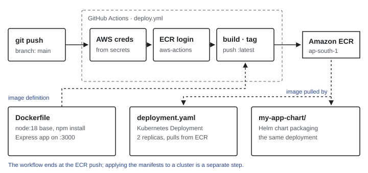

Problem
Building and uploading container images by hand is slow, and it's easy to ship something that doesn't match the code in the repository. I wanted the repository itself to be the only way an image gets made.
Approach
The application is intentionally minimal — a small Express server — so the focus stays on the delivery path rather than the app.

.github/workflows/deploy.yml, and the deployment definitions in the repository.Implementation
- Dockerfile builds on a Node 18 base image and exposes the app on port 3000.
- Workflow runs on every push to main: it configures AWS credentials from encrypted repository secrets, logs in to ECR, then builds, tags and pushes the image.
- Kubernetes Deployment runs two replicas of the image pulled from ECR, and a Helm chart packages the same deployment.
Screenshot to add: a successful Actions run and the image in the ECR console. Capture and place here.
Challenges
Add what actually went wrong while setting this up — e.g. IAM permissions, ECR authentication, or image tags. Your 10 commits are the record.
Learnings and next steps
- Credentials never appear in code; they live in repository secrets.
- The pipeline currently stops at publishing the image. The natural next step is deploying to the cluster from the workflow and tagging images by commit instead of only
latest, so any version can be rolled back.